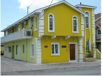
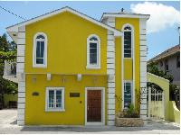

Yvette McCartney Law
A full-service law firm in Nassau. Litigation, corporate and commercial, real estate, mortgage enforcement, family law and personal injury.

Nassau, New Providence
P.O. Box N-10095
(242) 328-6725 and (242) 326-4620
What do you need help with?
Choose your matter. We will show the practice area, what to bring, and a brief you can print or read out when you call.
Six areas of practice.
The firm regularly acts for high net worth individuals, financial institutions, and leading commercial companies, both public and private.
The chambers.
Yvette McCartney Chambers7 Terrace W., Bldg. 10
Nassau, New Providence, Bahamas
P.O. Box N-10095
Tel (242) 328-6725, (242) 326-4620
Fax (242) 322-1816

How an enquiry works.
- 1. Call chambersTell us what has happened, in your own words. Use the finder to know what to have ready.
- 2. We listenWe confirm which area of practice your matter belongs to.
- 3. You decideYou decide how you would like to go ahead.
Call chambers.
Start with the finder above, then call. Bring what it lists.
(242) 326-4620
7 Terrace W., Bldg. 10, Nassau, Bahamas